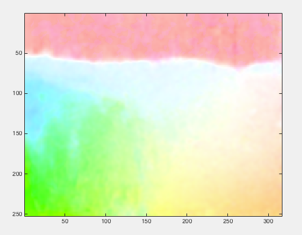

This is the readme for the matlab code associated with the paper: Solari F, Chessa M, Medathati NVK, Kornprobst P (2015) What can we expect from a V1-MT feedforward architecture for optical flow estimation? Signal Processing: Image Communication This code was contributed by Manuela Chessa. To run an example, simply type demo on the matlab command prompt after cd'ing to the folder that contains "demo.m". After a minute or two you should see the following images (Vx corresponds to the middle of the right images in Fig. 10 in the paper): If you would like to see this processed with middlebury software you can download http://vision.middlebury.edu/flow/code/flow-code-matlab.zip install the matlab files in the same folder as contains demo.m uncomment the last couple of lines in demo.m and rerun to obtain the below image that corresponds to and has the same colormap as the middle of the right images in Fig. 10: 